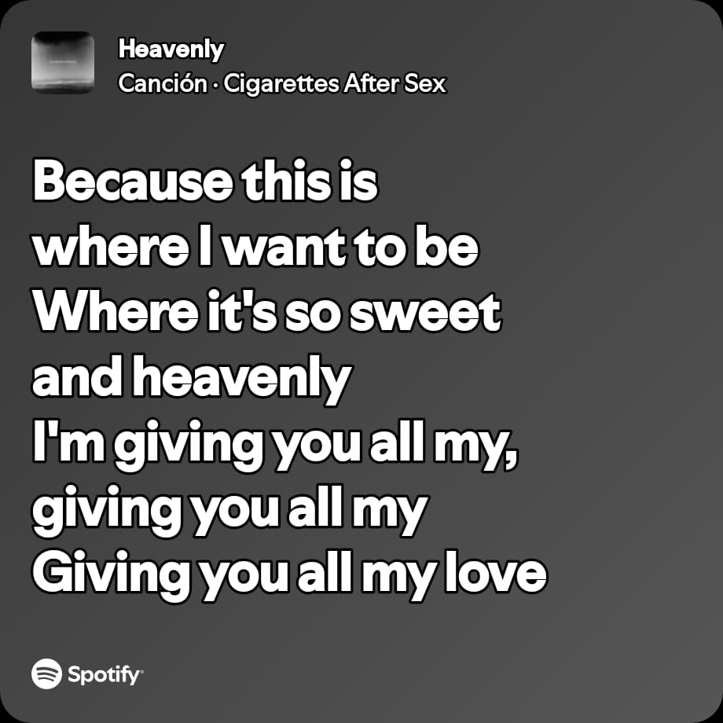
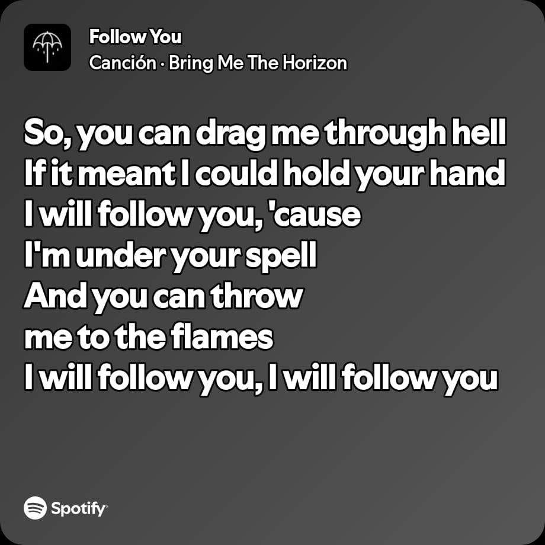
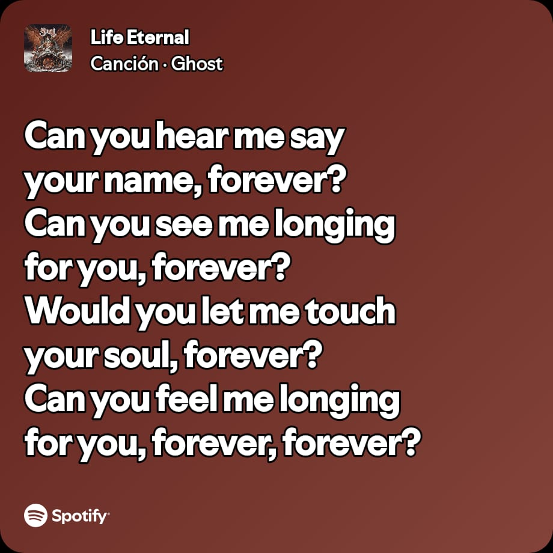
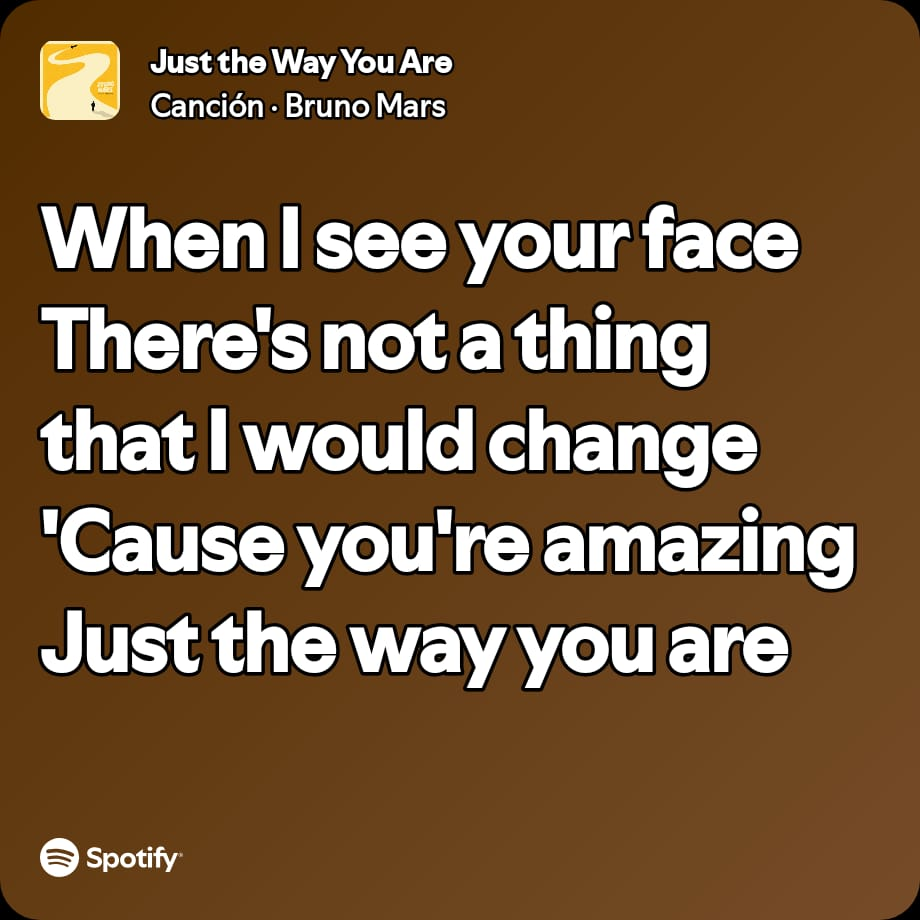

Hola mi amor no es la gran cosa jeje pero uno pequeño detalle.
Casi no te lo digo pero te pienso cada que suena.

Una de las 1ras que me dedicaste y por ello le tengo mucho cariño
y tu me haces sentir en un entorno celestial.
Que puedo decir aparte de que es nuestra cancion y que los imanes
somos tu y yo jeje.

Otra de nuestras canciones que me encanta y que me hace pensar en ti cada vez que la escucho
principalmente porque en verdad voy contigo hasta el fin del mundo y hasta el infierno si es
necesario.

Contigo me quiero quedar toda la vida, pero la vida no me es suficiente
para demostrarte lo mucho que te amo por ello te pido toda la eternidad.
Es una de esas canciones que me da mucha nostalgia porque me recuerda a
cuando pasabamos todo el dia jugando, riendo o simplemente tu dormida en
mi pecho cuando estabamos en cch y sinceramente me encantaria regresar a
esos tiempos.

Una cancion que en lo personal me gusta mucho porque creo que define
muy bien lo que pienso de ti y el como me haces sentir cada vez que te veo,
porque es lo que me confirma lo mucho que te amo y lo mucho que quiero estar contigo.